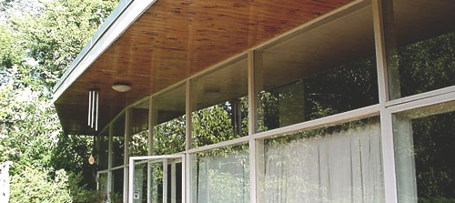

Visit Churchill House
CHURCHILL HOUSE
- 218 Northborne Avenue Braddon ACT 2612
If you like Churchill House, why not visit some of Robin Boyd's other Canberra Projects
FENNER HOUSE
- 8 Monaro Crescent, Red Hill

CLARK HOUSE
- 11 Tasmania Circle, Forrest
THE VERGE HOUSE - 204 Monaro Crescent, Red Hill